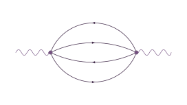
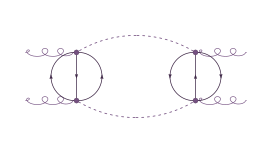
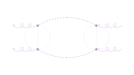

GammaLoop
Differential cross-sections with Local Unitarity
Crates & modulesgammaloopgammaloop-apigammalooprs
Public research software
The αLoop collaboration develops theoretical and algorithmic methods for automated cross-section calculations in quantum field theory, centred on Local Unitarity.




Local cancellation.
Global precision.
Research software · 01—05
Five connected codebases spanning numerical cross-sections, graph algorithms, tensor networks, symbolic identities, and integral evaluation.
Differential cross-sections with Local Unitarity
Half-edge graphs and subgraph-first algorithms
Typed tensors, symbolic structures, and executable tensor networks
Symbolic tensor identities for Spenso and Symbolica
Single-scale vacuum-integral matching and evaluation